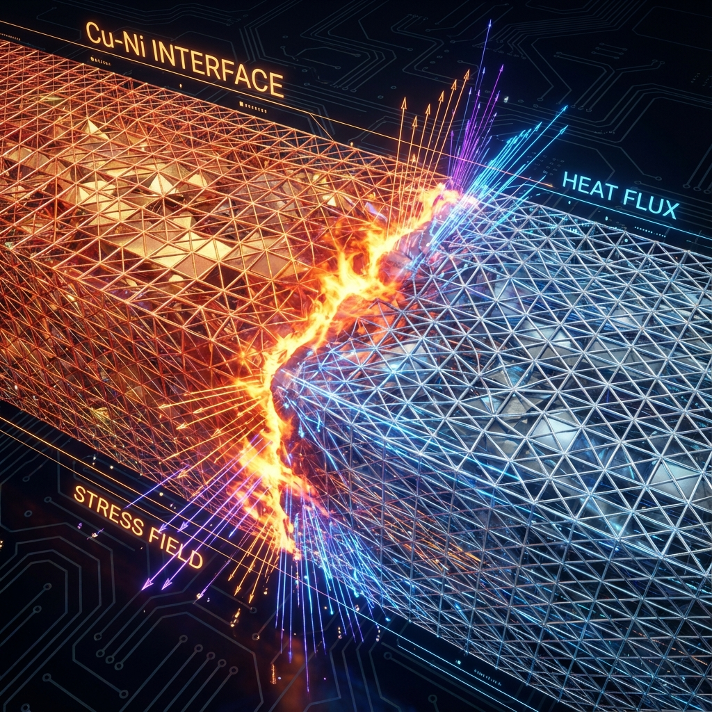
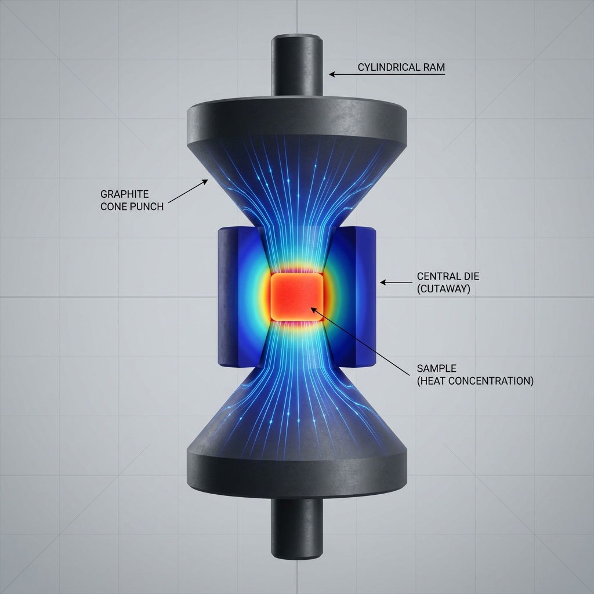
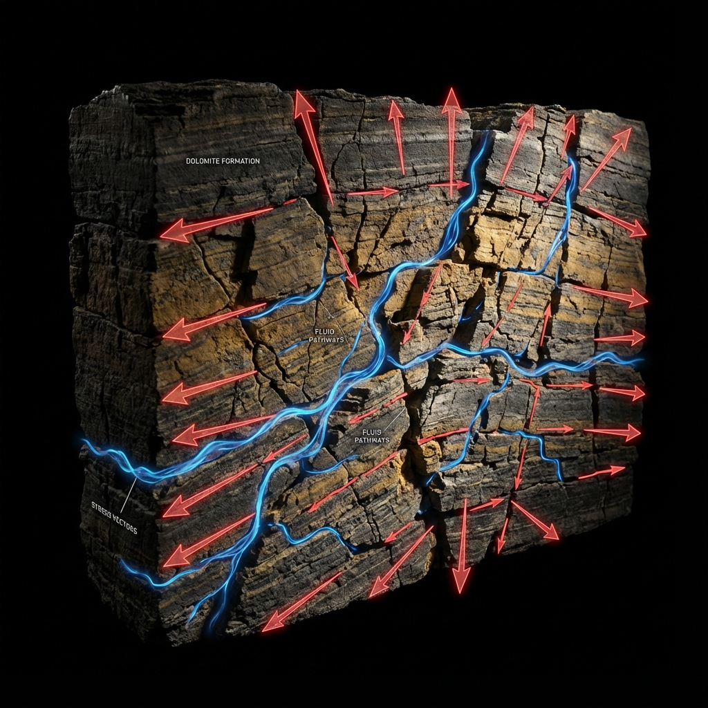
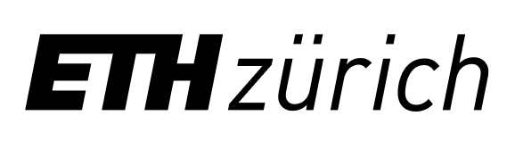
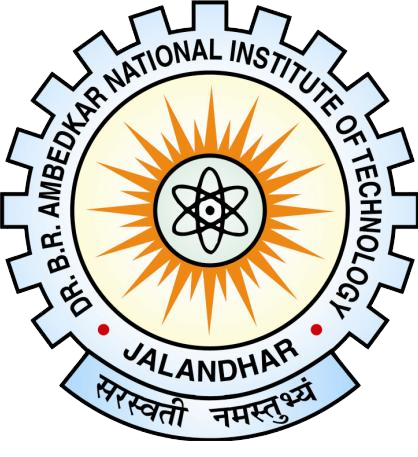

Who I am

I am a computational engineering researcher completing a Doctorate at ETH Zürich, where I work on the numerical modelling of spark plasma sintering — a process in which electric current, heat, and mechanical pressure act on a powder simultaneously, and where what happens between individual particles determines whether the finished component is sound.
My work combines classical finite element methods with machine learning to bridge that gap. Fully coupled electro-thermo-mechanical frameworks capture the physics; Direct FE² links the microscale to the component scale; ML surrogates make the result cheap enough to run inside a design loop rather than once at the end of one.
Before ETH I spent four years in the automotive industry at Hero MotoCorp, running structural, fatigue, and vibration analysis for mass-production vehicles.
Microstructure decides everything. Most simulations never look there.
Domains I work on
Multiphysics Modelling
Fully coupled electro-thermo-mechanical frameworks that simulate electric current flow, Joule heating, and densification as one unified continuum system rather than three separate solves.
Multiscale Direct FE²
Embedding resolved grain-level microstructures directly into component-scale meshes so micro-mechanics inform macro predictions seamlessly.
Surrogate Models for FEM
Python ML pipelines trained on high-fidelity simulation data that stand in for expensive FE solves, turning hours of compute into seconds in optimization loops.
Computational Engineering & HPC
Structural analysis, fracture mechanics, and optimization at scale — parallelised across HPC clusters with automated meshing and dataset generation pipelines.
Selected projects

Multiscale modelling of spark plasma sintering with a Direct FE² framework
A framework that embeds microscale powder characteristics directly inside a macroscale electro-thermo-mechanical model, improving accuracy and computational efficiency simultaneously — the two things multiscale methods usually trade against each other.

Multi-material spark plasma sintering
A fully coupled electro-thermo-mechanical framework for multi-material SPS, predicting interface behaviour and final part geometry against experimental validation.

Material parameter identification for SPS
A numerical–experimental method that predicts density accurately across heating rates for copper and nickel, cutting the experimental campaign needed and transferring to other SPS materials.

Bone tunnel stress in AC joint reconstruction
FEM plus radiological analysis of patient data, identifying tunnel placements that minimise coracoid fracture risk. Published in Archives of Orthopaedic and Trauma Surgery.

Stress regime effects on carbonate permeability
Outcrop data, finite-element geomechanics, and flow simulation on the Latemar carbonate buildup, showing that superimposed tectonic stresses raise permeability by up to 62% — stress history matters when predicting flow in fractured reservoirs.
Where I have worked
-
2021 — NOW

Doctorate Researcher · Advanced Manufacturing Lab
ETH ZÜRICH, SWITZERLAND
-
2019 — 2021
Research Assistant · Chair of Statics & Dynamics
RUHR UNIVERSITY BOCHUM, GERMANY
-
2014 — 2018
Deputy Manager · Chassis Simulation & Analysis
HERO MOTOCORP LTD, INDIA
Where I have studied
-
2021 — NOW
Dr. sc. Mechanical Engineering
ETH ZÜRICH, SWITZERLAND
-
2019 — 2021
M.Sc. Computational Engineering
RUHR UNIVERSITY BOCHUM, GERMANY · DEUTSCHLANDSTIPENDIUM
-
2010 — 2014

B.Tech. Mechanical Engineering
NIT JALANDHAR, INDIA · GOLD MEDAL & ROLL OF HONOUR (RANK 1)
Peer-reviewed publications
06 // COMPUTATIONAL TOOLKIT & TECH STACK